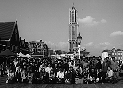
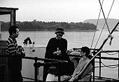
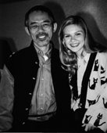
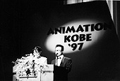

97.11.1（土）
今日突然、山小屋の宮崎さんから「社員旅行で豪華なツアーを組めないのか」とTELがある。今になってそんな…、と思いながらも、近畿日本ツーリストに電話してみるとこちらもやっぱりお休み。連絡するのが火曜日となるが、果たして間に合うのか。
会議のため、社員旅行に参加できないと思われていた鈴木プロデューサーだが2日目から参加することに決定。
メインスタッフコーナーにあった、アンテナ線がつながっていないテレビに、コードがアンテナになるように、訳の分からないケーブルをつなげ、サッカーワールドカップ予選にチャンネルを合わせる。最初のうちは音だけ聞いていたスタッフ達も、日本が勝っている状況を聞いて辛抱し切れずテレビに釘付け状態となる。
新人研修の応募締め切りが迫っているが、応募総数が異常に少ない。作画はなんと一桁。近藤喜文さんは「この際全部入れましょう」などと言っている。
97.11.4（火）
米沢さんが所属する某大手都市銀行から、「E.T.」超えた記念の紅白大福が送られてくる。ところで米沢さんは、「E.T.」を超えた事実を銀行に報告し忘れ、新聞によって銀行側はその事実を知ったとか。これにより現在スパイの資格を問われているらしい。
97.11.5（水）
今日が新人の応募の消印締め切り日だが、いまいち伸びが悪い。しかし社内の研修生上がりのスタッフに聞いたところ、みんな締め切りぎりぎりに作品を出したということなので、明日はドッと来るのを期待しよう。
恒例となった社員旅行のパンフレットがようやく完成する。あとはコピーして配るのみ。
97.11.6（木）
社員旅行のパンフレットをコピーし皆に配布するも、いくつか誤植が発覚、訂正の貼紙を社内に掲示。昨日から風邪が悪化していたのでそのせいにしている。
今日突然新人研修の応募作品が、まさに山の様に来る。昨日まで1名しか来ていなかったCG室もかなりの数になっている。
次作の参考にテックス・アヴェリーのLDを見る。参考にしたい部分は結局見つからなかったが、「あ、この話面白いんだよ」と言いながら、関係の無い話数を見てはみんなで大笑い。
97.11.7（金）
高畑監督は学校の為夕方出社。
またまた応募書類が山のように来る。動画部門は昨年の約1.5倍に達している。
97.11.8（土）
宮崎監督の部屋にあったサンタクロースのプラスチック製レリーフ（ジブリの守り神と言われている）の色を塗り直せ、と指示がある。早速ラッカー塗料等を購入し、美術陣の協力のもとリニューアル。
作画と美術、CG室の研修生1次選考。
97.11.10（月）
今日から二泊三日の社員旅行。行き先は長崎のハウステンボスだ。体調を崩して参加を取りやめた1人を除き、予定されていたメンバーは時間通り羽田空港に集合し出発する。しかし宮崎監督は顔に特徴がありすぎるのか、やたらと目立つ。空港では修学旅行生が多かったこともあるのだが、立っているだけで、フラッシュの嵐である。触りに来る学生までいる。あれじゃ疲れるだろうな。無事ハウステンボス到着。あとは自由行動。

97.11.11（火）
今日も一日自由行動。長崎、有田等へ行く者、ハウステンボスで1日過ごす者と様々。宮崎監督、ホテルでおばさん集団に取り囲まれる。

97.11.12（水）
17時の長崎空港集合までまたまた自由行動。無事1人も欠けずに飛行機に乗り込み帰京。
97.11.13（木）
昨日までの気分が抜けないのか、社内がなんとなく仕事モードに入っていない。こんなことではいかんのですが…。
アニドウ結成30周年記念企画「○○○○○の○○」オリジナル版の上映会の案内が送られて来る。近藤喜文氏が社内に声をかけたところ、あっと言う間に20人以上集まってしまった。並木さんに「大挙して行きます」とことわりの電話を入れる。
97.11.14（金）
仕上げ部門の書類審査が行われ、13人が2次審査へ。
今日は高畑監督が、学校と例の上映会でお休み。
社内スタッフ二十数名が例の上映会に参加。
97.11.15（土）
先月行われたアメリカ視察について、参加したメンバーからの報告会がバーにて行われる。社員のほとんどが参加し、約3時間にも及ぶ。
カナダのマーブ・ニューランドのスタジオで働いているアニメーターが見学のため来社。
撮影部の薮田氏が社員旅行での集合写真をコンピュータに入力し、色の修正を加えていたところ、そこへ２日目から旅行に参加し、集合写真に入っていない鈴木プロデューサーが、「俺の姿を合成しといて」と金髪美女とのツーショット写真を置いていった。美女が誰かは秘密らしい（本当は「魔女の宅急便」の英語版でキキを演じている15歳の女優さんで、鈴木プロデューサーは「恋人同士に見えるだろ」と言っているが、どう見ても親子）。

97.11.17（月）
田辺氏お気に入りの平田オリザの舞台ビデオを高畑監督以下メインスタッフで見る。
昨日の鈴木プロデューサーの写真について、私が親子に見えると書いたことを知った宮崎監督は「どこが親に見えるんだ？ どう見たってただの変な日本人じゃないか」と言っている。
97.11.18（火）
高畑監督が、今まで出来上がったシナリオの素材を元に、急遽読み合わせをしたいということで、野中さんと制作の居村君に朗読を依頼し、会議室にメインスタッフに集まってもらう。
最近、ジブリのある東小金井駅周辺に次々と、とんこつラーメン屋がオープンしている。東小金井ラーメン戦争勃発か！ ただし駅の南側なので北側にあるジブリにはあまり関係無く、スタッフは相変わらず貧相な食生活を続けている。
97.11.19（水）
今日は天気がよいので、高畑監督の提案により、１時頃からメインスタッフ揃って浴恩館公園と野川公園に散歩に出かける。
夜の10時頃、鈴木プロデューサーが岩井俊二さんを連れて帰社。金魚鉢にて高畑監督等とお話し。
スパイの米沢さんと、出版部柳沢、石光の3人が米沢さん曰く「スパイ活動」で高知へ日帰り出張。
97.11.20（木）
先日の読み合わせの続きをしようとしたが、保田さんがお休みの為、中止。
近藤喜文さんとスタッフ10人ほどと、立川にサラリーマンミュージカル「オー・マイ・サン社員」を見に行く。
ついに野中さんが本気で引っ越しを考えているらしい。情報誌を買いまくり、インターネットで物件を探し、昼休みには不動産屋廻りをしている。果たして今回は本当に引っ越せるのか？
97.11.21（金）
学校の為、高畑監督は夕方出社。
久しぶりに宮崎監督が山小屋から出社。
用事があって吉祥寺に出たら、ついついCD屋に入ってしまい、７枚もCDを買ってしまった（ついに出たぞチェリビダッケ）。店屋もなにも無い東小金井にいた方が懐的にはありがたい…。
97.11.22（土）
夕方から先日の読み合わせの続き。引き続いて高畑監督から作品の説明あり。
鈴木プロデューサー、米沢、菅野の3氏が、アニメーション神戸97に出席のため、連休中に神戸へ。

97.11.25（火）
午後から高畑監督らメインスタッフが集まり、徐々に出来上がりつつあるシナリオについて、意見の交換会が行われる。
ついにあの野中氏が引っ越しを決定！ この連休を利用して不動産屋廻りをしていた野中さんだが、会社から自転車で10分程の場所に掘り出し物のマンションを発見、取り合えず内金を入れてきたらしい。ところで、常日頃野中さんに「速く引っ越しをしろ」と激を飛ばしていた宮崎監督は、早速その部屋の間取りを見ながら「日が当たらなくて、風通しが悪い」だの「こんなに会社に近くては、家と会社の往復だけで一生が終わってしまう」などと文句をつけている。
97.11.26（水）
来年度の新人研修2次試験を目の前にして、問題が急ピッチで作られているが、デジタルペイントとなった仕上げ部門やCG部などは、どの様なテストだと良い人材を判断できるのか、担当者は頭を悩ましている。
美術、背景スタッフは、ロケハン（実は飲みに行くのが目的とも言われている）に多摩丘陵へ。
101CUT427秒分の絵コンテが出来上がる。総計243CUT 1,082秒。
97.11.27（木）
高畑監督から、次作の各部署メインスタッフへの説明会が行われる。高畑監督、鈴木プロデューサー、田辺、小西、百瀬、賀川、芳尾、石曽根、田中千義、伊藤、田中直哉、武重、保田、守屋、奥井の各氏が出席。高畑監督から、作品の意義、作るにあたっての問題点、動きの描き方、色彩、そして声優の人選までが話し合われる。
武重氏、田中直哉氏が今まで描き溜めた美術ボードを高畑監督に見せる。しかしセルのキャラクターが無いといまいち画面の感覚が掴みづらい。コンピュータからキャラをプリントアウトし、それをセルに貼ったものを早急に用意する。
97.11.28（金）
高畑監督が某テレビアニメに怒っていたので、早速メインスタッフの何人かとある回の話を見てみたが、たしかにこんな酷い話しは見たことがない。技術的な問題を言っているのではない。脚本が醜悪なのだ。生涯30分アニメを見てこんなに怒りと不快感をかき立てられた事はなかった。この様な作品がプライムタイムに放送され、一般にある評価を得ていることに憤りを禁じ得ない。
97.11.29（土）
2時から会議室に於て職場委員会が行われる。年末年始の休暇等連絡事項が鈴木プロデューサーから話された後、なぜかスパイ米沢氏による、近頃問題になっている金融破綻の講演会となる。
明日の作画、CGの研修生の2次試験に向け、机を片付けたり準備を進める。
97.11.30（日）
朝10時から、作画、CG部の新人研修生選考試験と面接が行われる。合格者は作画6人、CG部１人。
| 次のページへ |
| 日誌索引へ戻る |
| 「もののけ姫」トップページへ戻る |